산업안전기사 (2019-03-03 기출문제)
1과목: 안전관리론
1. 제일선의 감독자를 교육대상으로 하고, 작업을 지도하는 방법, 작업개선방법 등의 주요 내용을 다루는 기업내 교육방법은?
- TWI
- MTP
- ATT
- CCS
(정답률: 90%)

2. 안전검사기관 및 자율검사프로그램 인정기관은 고용노동부장관에게 그 실적을 보고하도록 관련법에 명시되어 있는데 그 주기로 옳은 것은?
- 매월
- 격월
- 분기
- 반기
(정답률: 72%)
3. 다음 재해사례에서 기인물에 해당하는 것은?
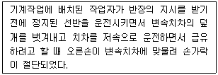
- 덮개
- 급유
- 선반
- 변속치차
(정답률: 75%)
4. 보호구 안전인증 고시에 따른 분리식 방진마스크의 성능기준에서 포집효율이 특급인 경우, 염화나트륨(NaCl) 및 파라핀 오일(Paraffin oil)시험에서의 포집효율은?
- 99.95% 이상
- 99.9% 이상
- 99.5% 이상
- 99.0% 이상
(정답률: 74%)
5. 산업안전보건법상 특별안전보건교육에서 방사선 업무에 관계되는 작업을 할 때 교육내용으로 거리가 먼 것은?
- 방사선의 유해·위험 및 인체에 미치는 영향
- 방사선 측정기기 기능의 점검에 관한 사항
- 비상 시 응급처리 및 보호구 착용에 관한 사항
- 산소농도측정 및 작업환경에 관한 사항
(정답률: 83%)
6. 주의의 수준이 Phase 0 인 상태에서의 의식상태는?
- 무의식상태
- 의식의 이완상태
- 명료한상태
- 과긴장상태
(정답률: 92%)
7. 한 사람, 한 사람의 위험에 대한 감수성 향상을 도모하기 위하여 삼각 및 원 포인트 위험예지훈련을 통합한 활용기법은?
- 1인 위험예지훈련
- TBM 위험예지훈련
- 자문자답 위험예지훈련
- 시나리오 역할연기훈련
(정답률: 76%)
8. 재해예방의 4원칙에 관한 설명으로 틀린 것은?
- 재해의 발생에는 반드시 원인이 존재한다.
- 재해의 발생과 손실의 발생은 우연적이다.
- 재해를 예방할 수 있는 안전대책은 반드시 존재한다.
- 재해는 원인 제거가 불가능하므로 예방만이 최선이다.
(정답률: 87%)
9. 적응기제(適應機制, Adjustment Mechanism)의 종류 중 도피적 기제(행동)에 해당하지 않는 것은?
- 고립
- 퇴행
- 억압
- 합리화
(정답률: 77%)
10. 인간오류에 관한 분류 중 독립행동에 의한 분류가 아닌 것은?
- 생략오류
- 실행오류
- 명령오류
- 시간오류
(정답률: 70%)
11. 다음 중 안전·보건교육계획을 수립할 때 고려할 사항으로 가장 거리가 먼 것은?
- 현장의 의견을 충분히 반영한다.
- 대상자의 필요한 정보를 수집한다.
- 안전교육시행체계와의 연관성을 고려한다.
- 정부 규정에 의한 교육에 한정하여 실시한다.
(정답률: 91%)
12. 사고의 원인분석방법에 해당하지 않는 것은?
- 통계적 원인분석
- 종합적 원인분석
- 클로즈(close)분석
- 관리도
(정답률: 48%)
13. 하인리히의 재해 코스트 평가방식 중 직접비에 해당하지 않는 것은?
- 산재보상비
- 치료비
- 간호비
- 생산손실
(정답률: 81%)
14. 안전관리조직의 참모식(staff형)에 대한 장점이 아닌 것은?
- 경영자의 조언과 자문역할을 한다.
- 안전정보 수집이 용이하고 빠르다.
- 안전에 관한 명령과 지시는 생산라인을 통해 신속하게 전달한다.
- 안전전문가가 안전계획을 세워 문제해결 방안을 모색하고 조치한다.
(정답률: 78%)
15. 산업안전보건법령상 의무안전인증대상 기계·기구 및 설비가 아닌 것은?
- 연삭기
- 롤러기
- 압력용기
- 고소(高所) 작업대
(정답률: 50%)
16. 안전교육방법 중 학습자가 이미 설명을 듣거나 시범을 보고 알게 된 지식이나 기능을 강사의 감독 아래 직접적으로 연습하여 적용할 수 있도록 하는 교육방법은?
- 모의법
- 토의법
- 실연법
- 반복법
(정답률: 81%)
17. 산업안전보건법상의 안전·보건표지 종류 중 관계자외출입금지표지에 해당되는 것은?
- 안전모 착용
- 폭발성물질 경고
- 방사성물질 경고
- 석면취급 및 해체·제거
(정답률: 79%)
18. 국제노동기구(ILO)의 산업재해 정도구분에서 부상 결과 근로자가 신체장해등급 제12급 판정을 받았다면 이는 어느 정도의 부상을 의미하는가?
- 영구 전노동불능
- 영구 일부노동불능
- 일시 전노동불능
- 일시 일부노동불능
(정답률: 61%)
19. 특정과업에서 에너지 소비수준에 영향을 미치는 인자가 아닌 것은?
- 작업방법
- 작업속도
- 작업관리
- 도구
(정답률: 71%)
20. 사고예방대책의 기본원리 5단계 중 틀린 것은?
- 1단계 : 안전관리계획
- 2단계 : 현상파악
- 3단계 : 분석평가
- 4단계 : 대책의 선정
(정답률: 53%)
2과목: 인간공학 및 시스템안전공학
21. 의도는 올바른 것이었지만, 행동이 의도한 것과는 다르게 나타나는 오류를 무엇이라 하는가?
- Slip
- Mistake
- Lapse
- Violation
(정답률: 75%)
22. 시스템 수명주기 단계 중 마지막 단계인 것은?
- 구상단계
- 개발단계
- 운전단계
- 생산단계
(정답률: 65%)
23. FT도에 사용되는 다음 게이트의 명칭은?
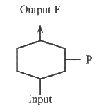
- 부정 게이트
- 억제 게이트
- 배타적 OR 게이트
- 우선적 AND 게이트
(정답률: 64%)
24. FTA에서 시스템의 기능을 살리는데 필요한 최소 요인의 집합을 무엇이라 하는가?
- critical set
- minimal gate
- minimal path
- Boolean indicated cut set
(정답률: 84%)
25. 쾌적환경에서 추운환경으로 변화 시 신체의 조절작용이 아닌 것은?
- 피부온도가 내려간다.
- 직장온도가 약간 내려간다.
- 몸이 떨리고 소름이 돋는다.
- 피부를 경유하는 혈액 순환량이 감소한다.
(정답률: 81%)
26. 염산을 취급하는 A 업체에서는 신설 설비에 관한 안전성 평가를 실시해야 한다. 정성적 평가단계의 주요 진단 항목에 해당하는 것은?
- 공장 내의 배치
- 제조공정의 개요
- 재평가 방법 및 계획
- 안전·보건교육 훈련계획
(정답률: 70%)
27. 인간-기계시스템의 설계를 6단계로 구분할 때, 첫 번째 단계에서 시행하는 것은?
- 기본설계
- 시스템의 정의
- 인터페이스 설계
- 시스템의 목표와 성능명세 결정
(정답률: 65%)
28. 점광원으로부터 0.3m 떨어진 구면에 비추는 광량이 5 Lumen 일 때, 조도는 약 몇 럭스인가?
- 0.06
- 16.7
- 55.6
- 83.4
(정답률: 51%)
29. 음량수준을 측정할 수 있는 3가지 척도에 해당되지 않는 것은?
- sone
- 럭스
- phon
- 인식소음 수준
(정답률: 84%)
30. 실린더 블록에 사용하는 가스켓의 수명은 평균 10000 시간이며, 표준편차는 200 시간으로 정규분포를 따른다. 사용시간이 9600 시간일 경우에 신뢰도는 약 얼마인가? (단, 표준정규분표표에서 u0.8413=1, u0.9772=2 이다.)
- 84.13%
- 88.73%
- 92.72%
- 97.72%
(정답률: 58%)
31. 음압수준이 70 dB인 경우, 1000 Hz에서 순음의 phon 치는?
- 50 phon
- 70 phon
- 90 phon
- 100 phon
(정답률: 74%)
32. 인체계측자료의 응용원칙 중 조절 범위에서 수용하는 통상의 범위는 얼마인가?
- 5 ~ 95 %tile
- 20 ~ 80 %tile
- 30 ~ 70 %tile
- 40 ~ 60 %tile
(정답률: 69%)
33. 동작 경제 원칙에 해당되지 않는 것은?
- 신체사용에 관한 원칙
- 작업장 배치에 관한 원칙
- 사용자 요구 조건에 관한 원칙
- 공구 및 설비 디자인에 관한 원칙
(정답률: 63%)
34. 정신적 작업 부하에 관한 생리적 척도에 해당하지 않는 것은?
- 부정맥 지수
- 근전도
- 점멸융합주파수
- 뇌파도
(정답률: 64%)
35. FMEA 의 장점이라 할 수 있는 것은?
- 분석방법에 대한 논리적 배경이 강하다.
- 물적, 인적요소 모두가 분석대상이 된다.
- 서식이 간단하고 비교적 적은 노력으로 분석이 가능하다.
- 두 가지 이상의 요소가 동시에 고장 나는 경우에도 분석이 용이하다.
(정답률: 63%)
36. 수리가 가능한 어떤 기계의 가용도(availability)는 0.9이고, 평균수리시간(MTTR)이 2시간일 때, 이 기계의 평균수명(MTBF)은?
- 15 시간
- 16 시간
- 17 시간
- 18 시간
(정답률: 72%)
37. 산업안전보건법령에 따라 제조업 중 유해·위험방지계획서 제출대상 사업의 사업주가 유해·위험방지계획서를 제출하고자 할 때 첨부하여야 하는 서류에 해당하지 않는 것은? (단, 기타 고용노동부장관이 정하는 도면 및 서류 등은 제외한다.)
- 공사개요서
- 기계·설비의 배치도면
- 기계·설비의 개요를 나타내는 서류
- 원재료 및 제품의 취급, 제조 등의 작업방법의 개요
(정답률: 57%)
38. 생명유지에 필요한 단위시간당 에너지량을 무엇이라 하는가?
- 기초 대사량
- 산소 소비율
- 작업 대사량
- 에너지 소비율
(정답률: 84%)
39. 다음의 각 단계를 결함수분석법(FTA)에 의한 재해사례의 연구 순서대로 나열한 것은?
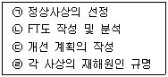
- ㉠→㉡→㉢→㉣
- ㉠→㉣→㉢→㉡
- ㉠→㉢→㉡→㉣
- ㉠→㉣→㉡→㉢
(정답률: 65%)
40. 인간-기계시스템의 연구 목적으로 가장 적절한 것은?
- 정보 저장의 극대화
- 운전시 피로의 평준화
- 시스템의 신뢰성 극대화
- 안전의 극대화 및 생산능률의 향상
(정답률: 88%)
3과목: 기계위험방지기술
41. 휴대용 연삭기 덮개의 개방부 각도는 몇 도(°) 이내여야 하는가?
- 60°
- 90°
- 125°
- 180°
(정답률: 63%)
42. 롤러기 급정지장치 조작부에 사용하는 로프의 성능 기준으로 적합한 것은? (단, 로프의 재질은 관련 규정에 적합한 것으로 본다.)
- 지름 1mm 이상의 와이어로프
- 지름 2mm 이상의 합성섬유로프
- 지름 3mm 이상의 합성섬유로프
- 지름 4mm 이상의 와이어로프
(정답률: 64%)
43. 다음 중 공장 소음에 대한 방지계획에 있어 소음원에 대한 대책에 해당하지 않는 것은?
- 해당 설비의 밀폐
- 설비실의 차음벽 시공
- 작업자의 보호구 착용
- 소음기 및 흡음장치 설치
(정답률: 87%)
44. 와이어로프의 꼬임은 일반적으로 특수로프를 제외하고는 보통 꼬임(Ordinary Lay)과 랭 꼬임(Lang's Lay)으로 분류할 수 있다. 다음 중 랭 꼬임과 비교하여 보통 꼬임의 특징에 관한 설명으로 틀린 것은?
- 킹크가 잘 생기지 않는다.
- 내마모성, 유연성, 저항성이 우수하다.
- 로프의 변형이나 하중을 걸었을 때 저항성이 크다.
- 스트랜드의 꼬임 방향과 로프의 꼬임 방향이 반대이다.
(정답률: 56%)
45. 보일러 등에 사용하는 압력방출장치의 봉인은 무엇으로 실시해야 하는가?
- 구리 테이프
- 납
- 봉인용 철사
- 알루미늄 실(seal)
(정답률: 79%)
46. 프레스 및 전단기에 사용되는 손쳐내기식 방호장치의 성능기준에 대한 설명 중 옳지 않은 것은?
- 진동각도·진폭시험 : 행정길이가 최소일 때 진동각도는 60°~90° 이다.
- 진동각도·진폭시험 : 행정길이가 최대일 때 진동각도는 30°~60° 이다.
- 완충시험 : 손쳐내기봉에 의한 과도한 충격이 없어야 한다.
- 무부하 동작시험 : 1회의 오동작도 없어야 한다.
(정답률: 58%)
47. 다음 중 산업안전보건법령상 연삭숫돌을 사용하는 작업의 안전수칙으로 틀린 것은?
- 연삭숫돌을 사용하는 경우 작업시작 전과 연삭숫돌을 교체한 후에는 1분 정도 시운전을 통해 이상 유무를 확인한다.
- 회전 중인 연삭숫돌이 근로자에 위험을 미칠 우려가 있는 경우에 그 부위에 덮개를 설치하여야 한다.
- 연삭숫돌의 최고 사용회전속도를 초과하여 사용하여서는 안 된다.
- 측면을 사용하는 목적으로 하는 연삭숫돌 이외에는 측면을 사용해서는 안 된다.
(정답률: 82%)
48. 다음 중 산업용 로봇에 의한 작업 시 안전조치 사항으로 적절하지 않은 것은?
- 로봇이 운전으로 인해 근로자가 로봇에 부딪칠 위험이 있을 때에는 1.8m 이상의 울타리를 설치하여야 한다.
- 작업을 하고 있는 동안 로봇의 기동스위치 등은 작업에 종사하고 있는 근로자가 아닌 사람이 그 스위치 등을 조작할 수 없도록 필요한 조치를 한다.
- 로봇의 조작방법 및 순서, 작업 주의 매니퓰레이터의 속도 등에 관한 지침에 따라 작업을 하여야 한다.
- 작업에 종사하는 근로자가 이상을 발견하면, 관리 감독자에게 우선 보고하고, 지시에 따라 로봇의 운전을 정지시킨다.
(정답률: 84%)
49. 프레스 작업 시작 전 점검해야 할 사항으로 거리가 먼 것은?
- 매니퓰레이터 작동의 이상유무
- 클러치 및 브레이크 기능
- 슬라이드, 연결봉 및 연결 나사의 풀림 여부
- 프레스 금형 및 고정볼트 상태
(정답률: 78%)
50. 압력용기 등에 설치하는 안전밸브에 관련한 설명으로 옳지 않은 것은?
- 안지름이 150mm를 초과하는 압력용기에 대해서는 과압에 따른 폭발을 방지하기 위하여 규정에 맞는 안전밸브를 설치해야 한다.
- 급성 독성물질이 지속적으로 외부에 유출될 수 있는 화학설비 및 그 부속설비에는 파열판과 안전밸브를 병렬로 설치한다.
- 안전밸브는 보호하려는 설비의 최고사용압력 이하에서 작동되도록 하여야 한다.
- 안전밸브의 배출용량은 그 작동원인에 따라 각각의 소요분출량을 계산하여 가장 큰 수치를 해당 안전밸브의 배출용량으로 하여야 한다.
(정답률: 71%)
51. 유해·위험기계·기구 중에서 진동과 소음을 동시에 수반하는 기계설비로 가장 거리가 먼 것은?
- 컨베이어
- 사출 성형기
- 가스 용접기
- 공기 압축기
(정답률: 65%)
52. 기능의 안전화 방안을 소극적 대책과 적극적 대책으로 구분할 때 다음 중 적극적 대책에 해당하는 것은?
- 기계의 이상을 확인하고 급정지시켰다.
- 원활한 작동을 위해 급유를 하였다.
- 회로를 개선하여 오동작을 방지하도록 하였다.
- 기계를 볼트 및 너트가 이완되지 않도록 다시 조립하였다.
(정답률: 68%)
53. 프레스기의 비상정지스위치 작동 후 슬라이드가 하사점까지 도달시간이 0.15초 걸렸다면 양수기동식 방호장치의 안전거리는 최소 몇 cm 이상이어야 하는가?
- 24
- 240
- 15
- 150
(정답률: 50%)
54. 컨베이어(conveyor) 역전방지장치의 형식을 기계식과 전기식으로 구분할 때 기계식에 해당하지 않는 것은?
- 라쳇식
- 밴드식
- 스러스트식
- 롤러식
(정답률: 69%)
55. 재료의 강도시험 중 항복점을 알 수 있는 시험의 종류는?
- 비파괴시험
- 충격시험
- 인장시험
- 피로시험
(정답률: 67%)
56. 다음 중 프레스를 제외한 사출성형기·주형조형기 및 형단조기 등에 관한 안전조치 사항으로 틀린 것은?
- 근로자의 신체 일부가 말려들어갈 우려가 있는 경우에는 양수조작식 방호장치를 설치하여 사용한다.
- 게이트가드식 방호장치를 설치할 경우에는 연동구조를 적용하여 문을 닫지 않아도 동작할 수 있도록 한다.
- 사출성형기의 전면에 작업용 발판을 설치할 경우 근로자가 쉽게 미끄러지지 않는 구조여야 한다.
- 기계의 히터 등의 가열부위, 감전우려가 있는 부위에는 방호덮개를 설치하여 사용한다.
(정답률: 82%)
57. 자분탐사검사에서 사용하는 자화방법이 아닌 것은?
- 축통전법
- 전류 관통법
- 극간법
- 임피던스법
(정답률: 63%)
58. 다음 중 소성가공을 열간가공과 냉간가공으로 분류하는 가공온도의 기준은?
- 융해점 온도
- 공석점 온도
- 공정점 온도
- 재결정 온도
(정답률: 65%)
59. 컨베이어 설치 시 주의사항에 관한 설명으로 옳지 않은 것은?
- 컨베이어에 설치된 보도 및 운전실 상면은 가능한 수평이어야 한다.
- 근로자가 컨베이어를 횡단하는 곳에는 바닥면 등으로부터 90cm 이상 120cm 이하에 상부난간대를 설치하고, 바닥면과의 중간에 중간난간대가 설치된 건널다리를 설치한다.
- 폭발의 위험이 있는 가연성 분진 등을 운반하는 컨베이어 또는 폭발의 위험이 있는 장소에 사용되는 컨베이어의 전기기계 및 기구는 방폭구조이어야 한다.
- 보도, 난간, 계단, 사다리의 설치 시 컨베이어를 가동시킨 후에 설치하면서 설치상황을 확인한다.
(정답률: 79%)
60. 다음 중 용접 결함의 종류에 해당하지 않는 것은?
- 비드(bead)
- 기공(blow hole)
- 언더컷(under cut)
- 용입 불량(incomplt penetration)
(정답률: 74%)
4과목: 전기위험방지기술
61. 정전작업 시 작업 중의 조치사항으로 옳은 것은?
- 검전기에 의한 정전확인
- 개폐기의 관리
- 잔류전하의 방전
- 단락접지 실시
(정답률: 43%)
62. 자동전격방지장치에 대한 설명으로 틀린 것은?
- 무부하시 전력손실를 줄인다.
- 무부하 전압을 안전전압 이하로 저하시킨다.
- 용접을 할 때에만 용접기의 주회로를 개로(OFF)시킨다.
- 교류 아크용접기의 안전장치로서 용접기의 1차 또는 2차측에 부착한다.
(정답률: 73%)
63. 인체의 전기저항 R을 1000Ω 이라고 할 때 위험 한계 에너지의 최저는 약 몇 J 인가? (단, 통전 시간은 1초이고, 심실세동전류
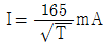
이다.)- 17.23
- 27.23
- 37.23
- 47.23
(정답률: 76%)
64. 다음 그림과 같이 완전 누전되고 있는 전기기기의 외함에 사람이 접촉하였을 경우 인체에 흐르는 전류(Im)는? (단, E(V)는 전원의 대지전압, R2(Ω)는 변압기 1선 접지, 제2종 접지저항, R3(Ω)은 전기기기 외함 접지, 제3종 접지저항, Rm(Ω)은 인체저항이다.)(관련 규정 개정전 문제로 여기서는 기존 정답인 1번을 누르면 정답 처리됩니다. 자세한 내용은 해설을 참고하세요.)
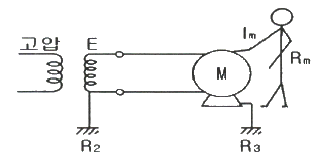
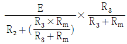
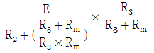
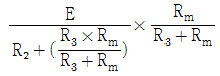
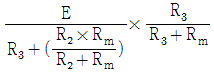
(정답률: 58%)
65. 전기화재가 발생되는 비중이 가장 큰 발화원은?
- 주방기기
- 이동식 전열기구
- 회전체 전기기계 및 기구
- 전기배선 및 배선기구
(정답률: 75%)
66. 역률개선용 커패시터(capacitor)가 접속되어있는 전로에서 정전작업을 할 경우 다른 정전작업과는 달리 주의 깊게 할 경우 다른 정전작업과는 달리 주의 깊게 취해야 할 조치사항으로 옳은 것은?
- 안전표지 부착
- 개폐기 전원투입 금지
- 잔류전하 방전
- 활선 근접작업에 대한 방호
(정답률: 60%)
67. 감전사고를 방지하기 위한 방법으로 틀린 것은?
- 전기기기 및 설비의 위험부에 위험표지
- 전기설비에 대한 누전차단기 설치
- 전기기에 대한 정격표시
- 무자격자는 전기기계 및 기구에 전기적인 접촉 금지
(정답률: 82%)
68. 전기기기 방폭의 기본 개념이 아닌 것은?
- 점화원의 방폭적 격리
- 전기기기의 안전도 증강
- 점화능력의 본질적 억제
- 전기설비 주위 공기의 절연능력 향상
(정답률: 66%)
69. 대전물체의 표면전위를 검출전극에 의한 용량분할을 통해 측정할 수 있다. 대전물체의 표면전위 Vs는? (단, 대전물체와 검출전극간의 정전용량을 C1, 검출전극과 대지간의 정전용량을 C2, 검출전극의 전위를 Ve 이다.)
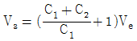
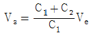
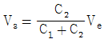
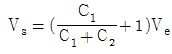
(정답률: 50%)
70. 다음 중 불꽃(spark)방전의 발생 시 공기 중에 생성되는 물질은?
- O2
- O3
- H2
- C
(정답률: 73%)
71. 감전사고가 발생했을 때 피해자를 구출하는 방법으로 틀린 것은?
- 피해자가 계속하여 전기설비에 접촉되어 있다면 우선 그 설비의 전원을 신속히 차단한다.
- 감전 사항을 빠르게 판단하고 피해자의 몸과 충전부가 접촉되어 있는지를 확인한다.
- 충전부에 감전되어 있으면 몸이나 손을 잡고 피해자를 곧바로 이탈시켜야 한다.
- 절연 고무장갑, 고무장화 등을 착용한 후에 구원해 준다.
(정답률: 85%)
72. 샤워시설이 있는 욕실에 콘센트를 시설하고자 한다. 이때 설치되는 인체감전보호용 누전차단기의 정격감도전류는 몇 mA 이하인가?
- 5
- 15
- 30
- 60
(정답률: 71%)
73. 인체의 저항을 500Ω이라 할 때 단상 440V의 회로에서 누전으로 인한 감전재해를 방지할 목적으로 설치하는 누전 차단기의 규격은?
- 30 mA, 0.1초
- 30 mA, 0.03초
- 50 mA, 0.1초
- 50 mA, 0.3초
(정답률: 81%)
74. 접지의 종류와 목적이 바르게 짝지어지지 않은 것은?
- 계통접지 – 고압전로와 저압전로가 혼촉되었을 때의 감전이나 화재 방지를 위하여
- 지락검출용 접지 – 차단기의 동작을 확실하게 하기 위하여
- 기능용 접지 – 피뢰기 등의 기능손상을 방지하기 위하여
- 등전위 접지 – 병원에 있어서 의료기기 사용시 안전을 위하여
(정답률: 47%)
75. 방폭 기기-일반요구사항(KS C IEC 60079-0)규정에서 제시하고 있는 방폭기기 설치 시 표준환경조건이 아닌 것은?
- 압력 : 80 ~ 110 kpa
- 상대습도 : 40 ~ 80%
- 주위온도 : -20 ~ 40℃
- 산소 함유율 21 %v/v 의 공기
(정답률: 57%)
76. 정격감도전류에서 동작시간이 가장 짧은 누전차단기는?
- 시연형 누전차단기
- 반한시형 누전차단기
- 고속형 누전차단기
- 감전보호용 누전차단기
(정답률: 66%)
77. 방폭지역 구분 중 폭발성 가스 분위기가 정상상태에서 조성되지 않거나 조성된다 하더라도 짧은 기간에만 존재할 수 있는 장소는?
- 0종 장소
- 1종 장소
- 2종 장소
- 비방폭지역
(정답률: 56%)
78. 전기설비기술기준에서 정의하는 전압의 구분으로 틀린 것은?(2021년 개정된 KEC 규정 적용됨)
- 교류 저압 : 1000 V 이하
- 직류 저압 : 1500 V 이하
- 직류 고압 : 1500 V 초과 7000 V 이하
- 특고압 : 7000 V 이상
(정답률: 72%)
79. 피뢰기의 구성요소로 옳은 것은?
- 직렬갭, 특성요소
- 병렬갭, 특성요소
- 직렬갭, 충격요소
- 병렬갭, 충격요소
(정답률: 64%)
80. 내압방폭구조의 필요충분조건에 대한 사항으로 틀린 것은?
- 폭발화염이 외부로 유출되지 않을 것
- 습기침투에 대한 보호를 충분히 할 것
- 내부에서 폭발한 경우 그 압력에 견딜 것
- 외함의 표면온도가 외부의 폭발성가스를 점화하지 않을 것
(정답률: 77%)
5과목: 화학설비위험방지기술
81. 위험물 또는 가스에 의한 화재를 경보하는 기구에 필요한 설비가 아닌 것은?
- 간이완강기
- 자동화재감지기
- 축전지설비
- 자동화재수신기
(정답률: 79%)
82. 산업안전보건기준에 관한 규칙에서 지정한 '화학설비 및 그 부속설비의 종류' 중 화학설비의 부속설비에 해당하는 것은?
- 응축기·냉각기·가열기 등의 열교환기류
- 반응기·혼합조 등의 화학물질 반응 또는 혼합장치
- 펌프류·압축기 등의 화학물질 이송 또는 압축설비
- 온도·압력·유량 등을 지시·기록하는 자동제어 관련 설비
(정답률: 64%)
83. 다음 중 반응기를 조작방식에 따라 분류할 때 이에 해당하지 않는 것은?
- 회분식 반응기
- 반회분식 반응기
- 연속식 반응기
- 관형식 반응기
(정답률: 67%)
84. 다음 중 물과 반응하여 수소가스를 발생할 위험이 가장 낮은 물질은?
- Mg
- Zn
- Cu
- Na
(정답률: 65%)
85. 다음 중 가연성 물질이 연소하기 쉬운 조건으로 옳지 않은 것은?
- 연소 발열량이 클 것
- 점화에너지가 작을 것
- 산소와 친화력이 클 것
- 입자의 표면적이 작을 것
(정답률: 73%)
86. 다음 중 열교환기의 보수에 있어 일상점검항목과 정기적 개방점검항목으로 구분할 때 일상점검항목으로 가장 거리가 먼 것은?
- 도장의 노후상황
- 부착물에 의한 오염의 상황
- 보온재, 보냉재의 파손여부
- 기초볼트의 체결정도
(정답률: 58%)
87. 헥산 1 vol%, 메탄 2 vol%, 에틸렌 2 vol%, 공기 95 vol%로 된 혼합가스의 폭발하한계 값(vol%)은 약 얼마인가? (단, 헥산, 메탄, 에틸렌의 폭발하한계 값은 각각 1.1, 5.0, 2.7 vol% 이다.)
- 2.44
- 12.89
- 21.78
- 48.78
(정답률: 59%)
88. 이산화탄소소화약제의 특징으로 가장 거리가 먼 것은?
- 전기절연성이 우수하다.
- 액체로 저장할 경우 자체 압력으로 방사할 수 있다.
- 기화상태에서 부식성이 매우 강하다.
- 저장에 의한 변질이 없어 장기간 저장이 용이한 편이다.
(정답률: 72%)
89. 산업안전보건기준에 관한 규칙 중 급성 독성물질에 관한 기준 중 일부이다. (A)와 (B)에 알맞은 수치를 옳게 나타낸 것은?
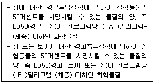
- A : 1000, B : 300
- A : 1000, B : 1000
- A : 300, B : 300
- A : 300, B : 1000
(정답률: 71%)
90. 분진폭발을 방지하기 위하여 첨가하는 불활성첨가물로 적합하지 않는 것은?
- 탄산칼슘
- 모래
- 석분
- 마그네슘
(정답률: 72%)
91. 다음 중 가연성 가스이며 독성 가스에 해당하는 것은?
- 수소
- 프로판
- 산소
- 일산화탄소
(정답률: 73%)
92. 위험물질을 저장하는 방법으로 틀린 것은?
- 황인은 물속에 저장
- 나트륨은 석유 속에 저장
- 칼륨은 석유 속에 저장
- 리튬은 물속에 저장
(정답률: 74%)
93. 다음 중 인화성 가스가 아닌 것은?
- 부탄
- 메탄
- 수소
- 산소
(정답률: 77%)
94. 다음 중 자연 발화의 방지법으로 가장 거리가 먼 것은?
- 직접 인화할 수 있는 불꽃과 같은 점화원만 제거하면 된다.
- 저장소 등의 주위 온도를 낮게 한다.
- 습기가 많은 곳에는 저장하지 않는다.
- 통풍이나 저장법을 고려하여 열의 축척을 방지한다.
(정답률: 74%)
95. 인화성 가스가 발생할 우려가 있는 지하작업장에서 작업을 할 경우 폭발이나 화재를 방지하기 위한 조치사항 중 가스의 농도를 측정하는 기준으로 적절하지 않은 것은?
- 매일 작업을 시작하기 전에 측정한다.
- 가스의 누출이 의심되는 경우 측정한다.
- 장시간 작업할 때에는 매 8시간마다 측정한다.
- 가스가 발생하거나 정체할 위험이 있는 장소에 대하여 측정한다.
(정답률: 76%)
96. 다음 중 가연성가스가 밀폐된 용기 안에서 폭발할 때 최대폭발압력에 영향을 주는 인자로 가장 거리가 먼 것은?
- 가연성가스의 농도(몰수)
- 가연성가스의 초기온도
- 가연성가스의 유속
- 가연성가스의 초기압력
(정답률: 60%)
97. 물이 관 속을 흐를 때 유동하는 물 속의 어느 부분의 정압이 그 때의 물의 증기압보다 낮을 경우 물이 증발하여 부분적으로 증기가 발생되어 배관의 부식을 초래하는 경우가 있다. 이러한 현상을 무엇이라 하는가?
- 서어징(surging)
- 공동현상(cavitation)
- 비말동반(entrainment)
- 수격작용(water hammering)
(정답률: 64%)
98. 메탄이 공기 중에서 연소될 때의 이론혼합비(화학양론조성)는 약 몇 vol% 인가?
- 2.21
- 4.03
- 5.76
- 9.50
(정답률: 28%)
99. 고압의 환경에서 장시간 작업하는 경우에 발생할 수 있는 잠함병(潛函病) 또는 잠수병(潛水病)은 다음 중 어떤 물질에 의하여 중독현상이 일어나는가?
- 질소
- 황화수소
- 일산화탄소
- 이산화탄소
(정답률: 64%)
100. 공기 중에서 A 가스의 폭발하한계는 2.2vol%이다. 이 폭발하한계 값을 기준으로 하여 표준 상태에서 A 가스와 공기의 혼합기체 1m3 에 함유되어 있는 A 가스의 질량을 구하면 약 몇 g 인가? (단, A가스의 분자량은 26 이다.)
- 19.02
- 25.54
- 29.02
- 35.54
(정답률: 48%)
6과목: 건설안전기술
101. 산업안전보건법령에 따른 거푸집동바리를 조립하는 경우의 준수사항으로 옳지 않은 것은?
- 개구부 상부에 동바리를 설치하는 경우에는 상부하중을 견딜 수 있는 견고한 받침대를 설치할 것
- 동바리의 이음은 맞댄이음이나 장부이음으로 하고 같은 품질의 제품을 사용할 것
- 강재와 강재의 접속부 및 교차부는 철선을 사용하여 단단히 연결할 것
- 거푸집이 곡면인 경우에는 버팀대의 부착 등 그 거푸집의 부상(浮上)을 방지하기 위한 조치를 할 것
(정답률: 67%)
102. 타워 크레인(Tower Crane)을 선정하기 위한 사전 검토사항으로서 가장 거리가 먼 것은?
- 붐의 모양
- 인양능력
- 작업반경
- 붐의 높이
(정답률: 75%)
103. 건설현장에서 근로자의 추락재해를 예방하기 위한 안전난간을 설치하는 경우 그 구성요소와 거리가 먼 것은?
- 상부난간대
- 중간난간대
- 사다리
- 발끝막이판
(정답률: 79%)
104. 달비계(곤돌라의 달비계는 제외)의 최대적재하중을 정하는 경우에 사용하는 안전계수의 기준으로 옳은 것은?
- 달기체인의 안전계수 : 10 이상
- 달기강대와 달비계의 하부 및 상부지점의 안전계수(목재의 경우) : 2.5 이상
- 달기와이어로프의 안전계수 : 5 이상
- 달기강선의 안전계수 : 10 이상
(정답률: 60%)
1⑤. 달비계의 구조에서 달비계 작업발판의 폭은 최소 얼마 이상 이어야 하는가?
- 30 cm
- 40 cm
- 50 cm
- 60 cm
(정답률: 71%)
106. 건설업 중 교량건설 공사의 유해위험방지계획서를 제출하여야 하는 기준으로 옳은 것은?
- 최대 지간길이가 40m 이상인 교량건설등 공사
- 최대 지간길이가 50m 이상인 교량건설등 공사
- 최대 지간길이가 60m 이상인 교량건설등 공사
- 최대 지간길이가 70m 이상인 교량건설등 공사
(정답률: 79%)
107. 구축물이 풍압·지진 등에 의하여 붕괴 또는 전도하는 위험을 예방하기 위한 조치와 가장 거리가 먼 것은?
- 설계도서에 따라 시공했는지 확인
- 건설공사 시방서에 따라 시공했는지 확인
- 「건축물의 구조기준 등에 관한 규칙」에 따른 구조기준을 준수했는지 확인
- 보호구 및 방호장치의 성능검정 합격품을 사용했는지 확인
(정답률: 81%)
108. 철골건립준비를 할 때 준수하여야 할 사항과 가장 거리가 먼 것은?
- 지상 작업장에서 건립준비 및 기계기구를 배치할 경우에는 낙하물의 위험이 없는 평탄한 장소를 선정하여 정비하고 경사지에는 작업대나 임시발판 등을 설치하는 등 안전조치를 한 후 작업하여야 한다.
- 건립작업에 다소 지장이 있다하더라도 수목은 제거하여서는 안된다.
- 사용전에 기계기구에 대한 정비 및 보수를 철저히 실시하여야 한다.
- 기계에 부착된 앵커 등 고정장치와 기초구조 등을 확인하여야 한다.
(정답률: 83%)
109. 건설현장에서 높이 5m 이상인 콘크리트 교량의 설치작업을 하는 경우 재해예방을 위해 준수해야 할 사항으로 옳지 않은 것은?
- 작업을 하는 구역에는 관계 근로자가 아닌 사람의 출입을 금지할 것
- 재료, 기구 또는 공구 등을 올리거나 내릴 경우에는 근로자로 하여금 크레인을 이용하도록 하고, 달줄, 달포대 등의 사용을 금하도록 할 것
- 중량물 부재를 크레인 등으로 인양하는 경우에는 부재에 인양용 고리를 견고하게 설치하고, 인양용 로프는 부재에 두 군데 이상 결속하여 인양하여야 하며, 중량물이 안전하게 거치되기 전까지는 걸이로프를 해제시키지 아니하 것
- 자재나 부재의 낙하·전도 또는 붕괴 등에 의하여 근로자에게 위험을 미칠 우려가 있을 경우에는 출입금지구역의 설정, 자재 또는 가설시설의 좌굴(挫屈) 또는 변형 방지를 위한 보강재 부착 등의 조치를 할 것
(정답률: 80%)
110. 일반건설공사(갑)로서 대상액이 5억원 이상 50억원 미만인 경우에 산업안전보건관리비의 비율(가) 및 기초액(나)으로 옳은 것은?
- (가) 1.86%, (나) 5,349,000원
- (가) 1.99%, (나) 5,499,000원
- (가) 2.35%, (나) 5,400,000원
- (가) 1.57%, (나) 4,411,000원
(정답률: 73%)
111. 중량물을 운반할 때의 바른 자세로 옳은 것은?
- 허리를 구부리고 양손으로 들어올린다.
- 중량은 보통 체중의 60%가 적당하다.
- 물건은 최대한 몸에서 멀리 떼어서 들어올린다.
- 길이가 긴 물건은 앞쪽을 높게 하여 운반한다.
(정답률: 71%)
112. 추락방지용 방망의 그물코의 크기가 10cm인 신품 매듭방망사의 인장강도는 몇 킬로그램 이상이어야 하는가?
- 80
- 110
- 150
- 200
(정답률: 71%)
113. 다음 중 방망에 표시해야할 사항이 아닌 것은?
- 방망의 신축성
- 제조자명
- 제조년월
- 재봉 치수
(정답률: 57%)
114. 강관비계 조립시의 준수사항으로 옳지 않은 것은?
- 비계기둥에는 미끄러지거나 침하하는 것을 방지하기 위하여 밑받침철물을 사용한다.
- 지상높이 4층 이하 또는 12m 이하인 건축물의 해체 및 조립등의 작업에서만 사용한다.
- 교차가새로 보강한다.
- 외줄비계·쌍줄비계 또는 돌출비계에 대해서는 벽이음 및 버팀을 설치한다.
(정답률: 75%)
115. 사다리식 통로 등을 설치하는 경우 고정식 사다리식 통로의 기울기는 최대 몇 도 이하로 하여야 하는가?
- 60도
- 75도
- 80도
- 90도
(정답률: 54%)
116. 부두·안벽 등 하역작업을 하는 장소에서 부두 또는 안벽의 선을 따라 통로를 설치하는 경우에는 폭을 최소 얼마 이상으로 해야 하는가?
- 70 cm
- 80 cm
- 90 cm
- 100 cm
(정답률: 78%)
117. 건설작업장에서 근로자가 상시 작업하는 장소의 작업면 조도기준으로 옳지 않은 것은? (단, 갱내 작업장과 감광재료를 취급하는 작업장의 경우는 제외)
- 초정밀 작업 : 600럭스(lux) 이상
- 정밀작업 : 300럭스(lux) 이상
- 보통작업 : 150럭스(lux) 이상
- 초정밀, 정밀, 보통작업을 제외한 기타 작업 : 75럭스(lux) 이상
(정답률: 72%)
118. 승강기 강선의 과다감기를 방지하는 장치는?
- 비상정지장치
- 권과방지장치
- 해지장치
- 과부하방지장치
(정답률: 73%)
119. 흙막이 지보공을 설치하였을 때 정기적으로 점검하여야 할 사항과 거리가 먼 것은?
- 경보장치의 작동상태
- 부재의 손상·변형·부식·변위 및 탈락의 유무와 상태
- 버팀대의 긴압(緊壓)의 정도
- 부재의 접속부·부착부 및 교차부의 상태
(정답률: 73%)
120. 사질지반 굴착 시, 굴착부와 지하수위차가 있을 때 수두차에 의하여 삼투압이 생겨 흙막이벽 근입부분을 침식하는 동시에 모래가 액상화되어 솟아오르는 현상은?
- 동상현상
- 연화현상
- 보일링현상
- 히빙현상
(정답률: 63%)